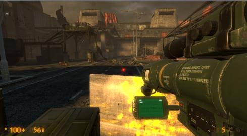

It’s a bit late for some feedback on v2’s first version, but I’ll take the opportunity of this release candidate to express myself.
C2A5G
I like the new appearance of the TOW courtyard, now we can enjoy the vista in the background. That plane taking off after you reach the garage’s windows was a good addition, same as that new window in the parking’s last level. My only concern on this part is that the security doors at each end of the alleyway between the garage and the parking are too big for such passage, and would end up going through the buildings if they were to open. I would suggest replacing them with the same kind of metallic curtain in the courtyard, if that’s possible.
I wasn’t sure what to expect with that new office area above the end of the map, but it turns out pretty well, and darn deadly if you just rush in. Kinda like the idea of those houndeyes trapped in that office, the doors being blocked by crates, also nice to see you added a zombie room. Still, it looks a bit weird to have a specific type of alien for each part of this place, but that isn’t a big issue.
Good idea to have an access to that security booth with the zombie guard. It breaks a bit the vortiguant scene though, but that also isn’t a big issue.
I’ll just add that the most frightening scene for me was when I entered that small storeroom with an headcrab on a locker, though poor fella just hit its head on the ceiling instead of jumping at my face when I opened that door.
C2A5H
I liked that access to the roof through the wrecked ceiling, at least that way I won’t get blown away by that wall and crates. About that part, seems like you resolved the issue of the tank aiming at you when you get on the roof.
Also, I noticed that the large doors closing the tunnel leading to G are also a bit large, and the left part would go through the wall when opening, but changing them would break a bit the immersion with the set of doors leading out of this map, so I don’t think you can replace them.
Again, great additions to the gasworks place. That new door leading to the boiler room wasn’t necessary, but it helps to locate yourself inside the building, like in Residue Processing.
I didn’t notice at first the room with the zombie on the roof, but it was a good idea to have rockets there so players can understand quickly how to get rid of that sniper, or restock ammo if they didn’t have any left.
I had the same issue too, but I’m sure TEXT will be able to fix that for the definitive version.
Sweet job job text. love STuncut only a few things I noticed:
The regret vorts animations dident play, I came around the corner and he was just standing there, broken.
I did encounter a crash on H. During the battle after the manta destroys the tank, about 2 seconds after it had destroyed it the second wave of enemies teleported in then the game crashed. Restarted, came back and it played just fine so im going to say that was BM being BM.
As for your experiments:
I’ll be honest I never knew the vent panels ever floated right through the floor until you mentioned it above^. So I say keep it(thumbs up)
As for the brush work with the cars, that was never an issue for me. So if people are complaining about, keep it
love the mantas new pathing. before I did noticed it fly through the building and I always overlooked it. So to see him fly up and over the building look very natural, keep it
As for the grate in the satchel pipe, this one I will say remove it entirely because it does, in my opinion block the players view of what he’s doing. reverting back the old way is more faithful to HL.
I just played through the maps. I crashed when I jumped down into the part the leads to the satchel pipe. I do have the Reanimated weapons, and no, I did not try to uninstall it. Apart from that, though, no hiccups. I think that crash is due more to the fact that I have a weak rig than anything else, so you shouldn’t worry. Just a heads up!
Also, I think the other grating in the Satchel Pipe works best. Revert back to the one in V2 please.
The falling vent pieces becoming physics objects looked very cool and adds another layer of realism. Love that change. I don’t think there’s anything wrong with the Manta/Harriers now, they seem fine to me.
Not sure on the satchel pipe grate. I kinda like how the new grating looks, but maybe move it closer to the player. That way they can’t go too far in and get caught in the initial fire, but can still peer through and see the soldier in the background.
I think that you’ve managed to improve things quite a bit, both in terms of aesthetics and performance. I just ran through the whole of ST Uncut without a single crash and a solid frame-rate for the most part. I think it’s behaving about as well as can be expected.
The only place I still get very bad performance is the first level of the car park.
I think it might be caused by the flickering firelight of the flaming humvee.
Everytime I look in its direction, the FPS goes down.
Is there any way you could move this to somewhere that’s less cluttered? I think that having a particle effect with a dynamic light on top of tonnes of debris, AI and ragdolls in the same area could be the thing that’s pushing it over the edge in terms of performance. I know you’re not really looking to go make big changes, but I think it might be worth trying to see if it helps.
The only other issue I have is that when I had the Garg follow me to the exit of the last level, he wouldn’t attack me beyond a certain point at the back of the tunnel. I could just stand there a few feet out of the range of his jets, he wouldn’t step forward…
But anyway, ST Uncut has turned out wonderfully, I salute you for your dedication!
Cheers everyone for your feedback. So far it’s been very encouraging, with only really transitional crashes occurring. I’ll see what I can do about those, though I really don’t know if I can do anything. It may just have to be lived with, we’ll see!
Seems pretty much everyone dislikes the new grating. That’s cool, I get that. Would you prefer me to change it back to V2’s Beta, or just remove it entirely? I’m leaning more towards the 1st option.
It matches a similar style of room found at the start of C2A5E. The one console could do any number of things, its purpose is ambiguous. And 1 computer can do pretty much anything as well. And I’m not sure what big control panel you’re talking about, unless you mean the huge security stations at the end of G. I don’t think that would look good at all.
What little cabinet? Do you mean the security hut? I’ve already explained that!
The old route is very purposely still accessible - why else would I have changed the way the door works instead of just removing it? It’s to reduce linearity and reward players for exploration. Players who explore the office, though they may find difficult fights, will also net gain from all the hidden goodies stashed around. Players just looking to quickly advance to the next section can just use the red blast doors.
I’ll point by point this one.
I know what you’re saying about the doors - there’s no real good way to change them sadly. It’s a flaw in the design which will probably have to be lived with. Vertical doors would clip just as badly.
I’d never thought about different rooms for different aliens being weird, it is a bit odd now that I think about it. Not really sure I can fix that, as mixing the aliens together is weird as well. Another flaw I think we’ll have to live with!
As for the Headcrab, I might move him to somewhere else. Some other people have asked me to do that as well. I just like him on top of the cupboard. It’s surprising!
Regret Vort works fine for me - did you approach from the usual way or from the security office? Going through the security office he normally doesn’t do it because he can see you.
You’re the first one to report a crash on this version during the Abrams battle, so until we hear otherwise, like you said, we can chalk it down to BM being BM.
Experiments:
I actually had no idea about the vent parts either until I looked at their I/O coding the other day while trying to fix broken I/O chains. They had “solid to world,” disabled. Not sure why - maybe where they originally where caused them to block the Garg or something. Anyway I like it as it is and most other people seem to as well, so I think i’ll keep it.
Will probably keep this as well, aside from lowering/parenting the one by the window so Hivehand shots don’t get blocked.
Cool. Have heard no complaints about this either. They actually fly into the 3d skybox with gives some problems for technical reasons I won’t go into. Their position relative to the buildings in the background is different based on where you’re standing, basically.
My thoughts on this above!
Flaming Humvee might be causing poor performance actually. I don’t know if BM’s engine version changed the way the env_fire entity behaves, but it could be a cause. I’ll take a look at it. It might also explain why the furnace room performs relatively poorly despite not being all that demanding.
I’ll play around with it and see what I find. If it produces marked increases in performance, I will definitely scrap it.
As for the Garg’s’ weird behaviour, that’s strange - he’s nodegraphed all the way to the end of the tunnel. I’ll take a look into that as well.
This has been a problem ever since the very first version, and seems to be an issue with the way the LAV is coded. It actually happens to the LAVs on C2A5D and C2A5F as well, but the difference is those LAVs are in a position where the players can’t see it happening. If you fly over to them with notarget on you’ll see that after they stop their wheels keep moving for a bit as well. It’s just bad luck that the tank on my map is so visible, and I can’t really move it. I’ve tried all manner of things to stop it from doing that, but nothing works.
Wanted to take part in the first big fight, where they kill the chopper and my screen froze and the firing sound continued to play, then crash to desktop.
So it seems better to watch the big fights from a distance and not run through it and fight them…
Fair enough. Was just a guess anyway, it looks different to how I remember env_fires looked in CS:S so that was the only reason I said that. It does interest me that the two areas which perform “unnecessarily badly” (Car Park Ground Floor / Furnace Room) also have env_fires though. I’ll have to look into that!
That could happen for any number of reasons. I wouldn’t say the two are necessarily correlated.
EDIT:
Overlay bug - not fixable. I’ve tried a few things, don’t know how to sort it. It’s a little annoying, but might have to live with it.
It’s part of the model - supposed to be a power cable or something.
Very minor. Might fix it, depends.
Maybe - I’ll see if I can find a cool spot where it doesn’t.
I don’t think they are. And if they are - can’t do anything about it - it’ll be be poorly aligned physics models.
That’s weird. How did you get it to be like that? Can you tell me what you did? I haven’t got that ever, so I find it weird that you did.
H1) Can’t fix it - the pipe’s part of the pipe that goes downstairs, and prop lighting means can’t do much about it.
Just loaded map H, cause the transition from G to H is bugged here…
When I drop down to the furnace room and I look to the place a soldier is gonna open the door and gonna drop an explosive, it seems there is some kind of raster first, correct? Or a bug?
Hey text Im just wondering, remember that bug you had in the car park on G where if the hornets from the grunts hit the jump pad the game would crash(I think that’s what it was), I know you fixed that, but whatever you did there, did you also do it to the jump pad on H?, Because there is a lot of fighting in that back ally and I wonder if my crash from earlier might have been caused by that. If that’s not the case then never mind.
One other thing for the zombie in the security office in the transition to H, isn’t suppose to start banging on the glass after the level transition, or just walk around randomly?
I finally got the chance to play through it and I got to say that you did a really good job.
First I’m going to report that over this playthrough I experienced zero crashes with the level transitions. I went from G into H, then turned around and went back to G, and then sometime later went back to H. I had no problems with the game in terms of switching between levels. That being said, I have never really experienced problems with the rest of Black Mesa either (in fact I can’t really recall it ever crashing on me ever), so I am hardly representative of the problem here.
I know you’re aiming to just make sure it works with this release, but when I went to H for the first time (via the zombie room), I was right next to the regret vort when he did this scene. It seemed kind of jarring that he didn’t notice me at all.
As to your experiments:
1: I was hoping you might do this at some point. It’s a shame I didn’t mention this myself but as I haven’t really been involved in this thread, I admittedly assumed that it had been brought up already.
4: Personally I think the grating makes sense. Certainly from a gameplay perspective it would explain why we can’t shoot the soldier (because otherwise that would break the scene so much).
The dialogue change for the Barney is very welcome in my book. It certainly gets rid of the cloning issue, yes?
I also really enjoyed the new office additions. Just as I mentioned earlier, the restructuring of the helipad makes much greater sense now. The expanded areas felt very nice, and I had a good time exploring them.
I think my only real quip at this point was that coming into the final area of G (with the large battle), I had the urge to shoot with the hivehand over the barrier, only to find that I couldn’t really do that. That felt just a bit odd.
Nice work Text. Can’t wait to see you resume work on B2!
Looks like I’m late to the party! Anyhow I just finished playing through the release candidate, so here’s some glorious feedback?
I didn’t experience a single crash and I think I played for a good hour and a half. On the version before this I only crashed dropping into the satchel pipe, but this time I had no problems or even a slowdown in frames. I also had no issue with any level transitions and I took multiple routes backtracking a few times between the new office section and the gasworks level.
Experimental Change One:
I really liked the way the vent dropped down and remained there. It looks a lot more natural now after you’ve dropped down and look back to where you came from. The lighting is good enough in my book to keep them.
Experimental Change Two:
Seems to work pretty well. I spent a good bit of time just tossing things around in the garage trying to break these and I didn’t have any trouble with them, but then I never did in the past either and I don’t think the wonky physics on a single object after being crushed by a car lift is too big a deal. I don’t mind this one either way.
Experimental Change Three:
I think the new pathing is pretty much as good as it reasonably needs to be. Improve it if you feel you must, but it looked great to me and i was really paying attention too!
Experimental Change Four:
The only change of the four that I strongly dislike. I think it was perfect the way it was on the previous version before this release candidate. The black texture when approached from inside the pipe ends up looking like a really low resolution model from the games of old. It’s also much too difficult to understand what’s happening in this scene now. You can’t really see the satchel unless you’re looking for it now.
https://i.imgur.com/RHwEdDA.jpg
My take on the headcrab on the shelf. He hit the ceiling and landed on the floor for me as well after opening the door to the room he’s in. I don’t know if this happens every time or not, but if so I agree that he should be moved somewhere better. Picture related. You could put him on the ground behind the door in the same room.
https://i.imgur.com/HNIwJ17.jpg
The red control panel for the blast door next to the security office with the zombie in it doesn’t make the access denied sound that all of the other red control panels for the doors make in your levels.
https://i.imgur.com/KLUuAlG.jpg https://i.imgur.com/mEZNDqh.jpg
This tile in the upstairs bathroom seems to have a different glass texture than the rest. I only mention it because it did seem to stick out a bit as you naturally approach the blown out section of the wall and it’s directly below it.
https://i.imgur.com/Q7SPsiK.jpg https://i.imgur.com/7mBBUrn.jpg
Would it be possible to make these green control panels fully functional and open and close the gasworks door after you’ve come out of the security room barney’s in and the switches have turned green. It seems strange that they don’t function despite being green and making the activation sound until you walk far enough outside of the gasworks to trigger the door shutting the first time. Then you can open the door from the outside, but not close it again from either the outside or indoor switch which are both green.
https://i.imgur.com/rse3Gk3.jpg
Same thing with this switch before you enter inside and the door automatically shuts on you. It’s fine that the door can’t be opened once you transition into the next level (duh), but I think it would be a nice little touch if this doors control panels on the outside and inside were fully functional after barney (or the player) has initially opened it from the main security switch.
Edit: When I originally approached the regret Vortiguant from the security office with the zombie in it I also missed the usual animation as another poster mentioned. He attacked me right away. It could be that my game was just loading for too long and I missed it? I took the same route with the previous version and this didn’t happen last time.
Thanks everyone for your feedback again. I’ve been pleased to hear that most people are happy with this version. The final release should be very soon, I have next to nothing to fix.
My final thoughts on the experimental changes:
1, 2 and 3 can stay, nobody seems to dislike these.
4 will be reverted to the previous beta. I would argue the previous texture is a bit too “wimpy” to explain why you can’t shoot him, but I reckon very light explanation is still better than none.
Right, let’s go point for point on some feedback here.
Firstly though I’m going to point out for those of you experiencing transitional crashes that I may very well have to leave the final version the way it is. I have zero idea what’s causing it, and your-name-here didn’t take a look at the mdmps for me (which is PERFECTLY FINE by the way, he owes me nothing at all and I’m sure he’s a really busy guy). I really do have no idea what might be causing them aside from the maps just being really full, and Source having problems with that specifically. On the plus side, it’s not happening for everyone, and it’s only really happening there now, as far as I can tell.
The “bug” was that the jump pad in the car park was ever so slightly underneath the overhang from the ground floor ceiling. Jump pads seem to REALLY hate launching things up into a ceiling, and not only do the hivehand bees contacting the ceiling cause it to crash, it also crashed if the players hits it from an angle which makes them contact the ceiling. The “fix” was to simply reposition the pad so that it’s very tricky to find an angle that makes you hit the ceiling.
The pad on H has already been fixed similarly by having a clip brush which prevents things from hitting the pad at the wrong angle. It’s why you can no longer go into the small area behind the pad.
As for the banging Zombie, I removed the sequence, as I’m pretty sure it was causing problems. It’s a shame, I’m sad to see it gone. He just wanders around aimlessly now.
Hi .RK, how’s it going - haven’t heard from you in a while! Thanks for giving your perspective on the new and improved ST - even positive feedback is still great to hear! I’m glad to see my maps are working properly for quite a few people, but sad to hear it’s not everyone.
As for your final comment about the hivehand and the barrier during the Helipad scene, I’m not sure what you mean by this. Could you elaborate a little?
Cheers man. I ALWAYS appreciate your feedback as it’s always very well delivered and nearly always bang on. I’ll go point for point on it as there isn’t too much to address:
Collision ladder: It doesn’t have collision because the player can’t climb up the ladder if it does have collision, the func_usable_ladder entities HATE that. I’m surprised you could walk behind it though, normally you automatically latch on no matter what. I’ll try and resolve that hackishly.
Shelf crab: I’ve moved him, albeit reluctantly. I know he can’t stay on that shelf, I just thought it was a really cool place for him, even if it didn’t work properly.
Non beeping panel: Fixed. Small oversight on my part.
Different coloured tile: Can’t do anything about that. The tile’s the same texture, but appears to be using a different cubemap. I’ve manually assigned it to the bathroom cubemap, but if that doesn’t help it, there’s nothing I can do.
Control panels: Yes, will do that.
End door control panel: Can’t do this one though. The reason it behaves as it does now is so that it’s IMPOSSIBLE to create a scenario where you reach the level transition while the door is still open. By the time a player reaches the transition door, the blast door will be automatically shut. This is so if the player really quickly turns around as the level’s changing, they won’t be able to see the outdoor area “deload” and the doors magically reappear as shut on I.
You’ll notice the ground texture for that bit is sand. I did it on purpose - it looks like there’s a bit of sand blown onto the tent floor or something.
Funnily enough when I went back to grab some screenies for this, I happened to realize why this was happening.
In the below screenshot I put the rocket launcher tracker dot thing (?) up against it. Turns out that the physics box for those concrete barriers is just a bit higher than the model is. 'Fact the physics box for the model is just that - a box.
At any rate that explains what I was getting, since hivehand also operates as a projectile. And they are both being blocked by the barrier’s collision box. lol

Founded in 2004, Leakfree.org became one of the first online communities dedicated to Valve’s Source engine development. It is more famously known for the formation of Black Mesa: Source under the 'Leakfree Modification Team' handle in September 2004.


{kind=link}
{kind=link}
{kind=link}
{kind=link}
{kind=link}
{kind=link}
{kind=link}
{kind=link}
{kind=link}
{kind=link}
{kind=link}
{kind=link}
{kind=link}
{kind=link}
{kind=link}
{kind=link}
{kind=link}
{kind=link}
{kind=link}
{kind=link}
{kind=link}
{kind=link}
{kind=link}
{kind=link}